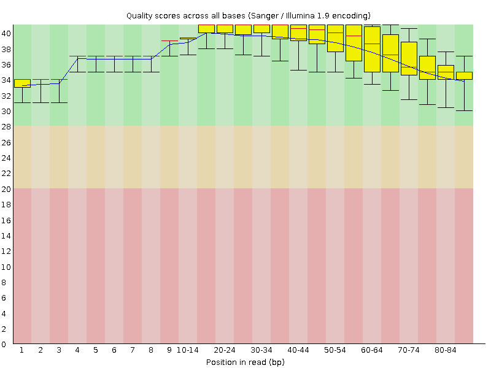
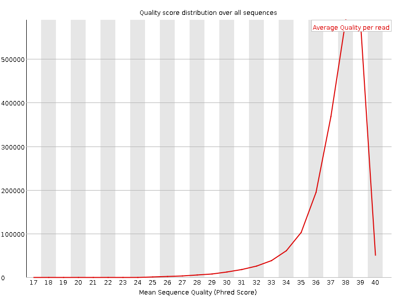
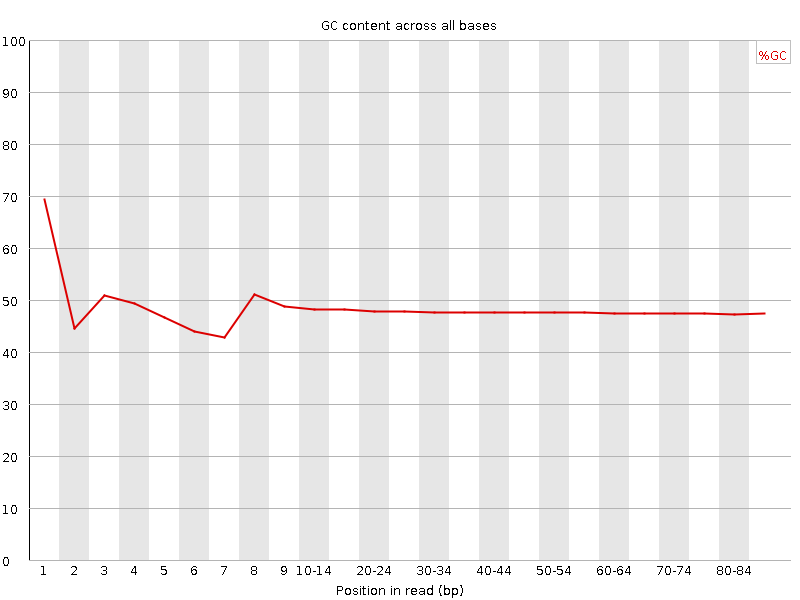
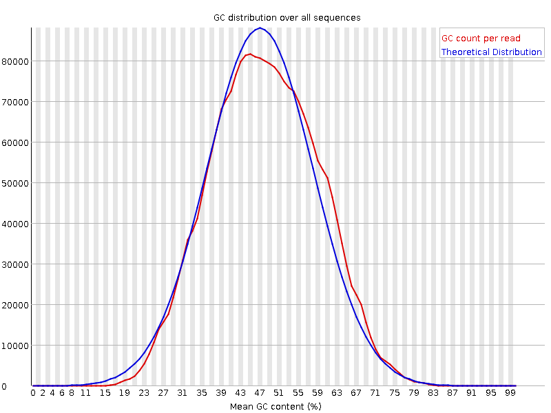
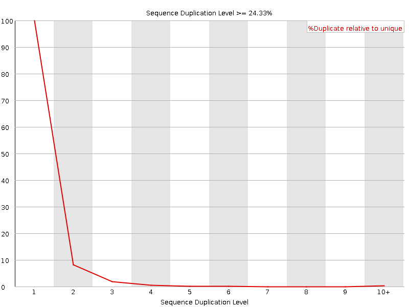
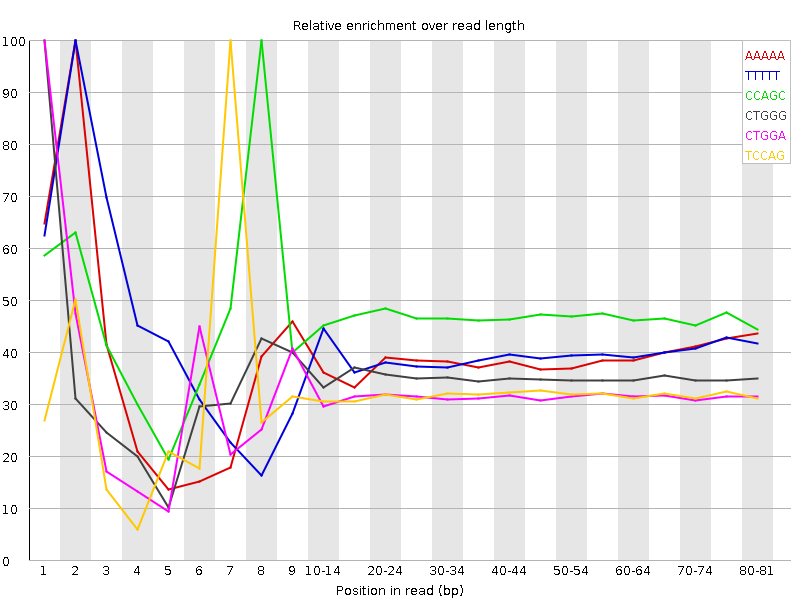

![[OK]](Icons/tick.png) Basic Statistics
Basic Statistics
| Measure | Value |
|---|---|
| Filename | c786-O.2_1.f.fastq |
| File type | Conventional base calls |
| Encoding | Sanger / Illumina 1.9 |
| Total Sequences | 2070559 |
| Filtered Sequences | 0 |
| Sequence length | 85 |
| %GC | 48 |
Per base sequence quality

Per sequence quality scores

![[FAIL]](Icons/error.png) Per base sequence content
Per base sequence content

Per base GC content

Per sequence GC content

Per base N content

Sequence Length Distribution

![[WARN]](Icons/warning.png) Sequence Duplication Levels
Sequence Duplication Levels

Overrepresented sequences
No overrepresented sequences
Kmer Content

| Sequence | Count | Obs/Exp Overall | Obs/Exp Max | Max Obs/Exp Position |
|---|---|---|---|---|
| AAAAA | 536215 | 2.7909875 | 7.222064 | 2 |
| TTTTT | 509260 | 2.4787564 | 6.140551 | 2 |
| CCAGC | 346765 | 2.389206 | 5.092561 | 8 |
| CTGGG | 327080 | 2.2596583 | 6.415757 | 1 |
| CTGGA | 349415 | 2.236955 | 7.0161443 | 1 |
| TCCAG | 347895 | 2.2093585 | 6.9290013 | 7 |
| CTCCA | 335275 | 2.112134 | 5.7712235 | 6 |
| CTTCA | 363335 | 2.1097312 | 5.1995254 | 1 |
| CAGAA | 324050 | 1.9484061 | 5.3670306 | 1 |
| AAAAT | 374245 | 1.9219849 | 5.5242977 | 3 |
| GAAAA | 340260 | 1.9111861 | 5.1319947 | 1 |
| CTCAG | 278590 | 1.7692268 | 5.2906294 | 1 |
| CTTTT | 320355 | 1.691711 | 5.043052 | 1 |
| GGAAA | 276140 | 1.6737652 | 5.027478 | 1 |
| CTTTG | 287865 | 1.6625762 | 5.0080013 | 1 |
| CTTGG | 257415 | 1.6260153 | 5.0372267 | 1 |
| ATCCA | 210280 | 1.2374932 | 5.2220645 | 6 |